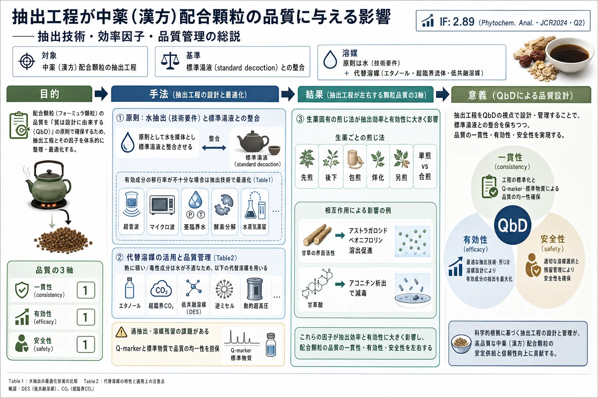

抽出工程が中薬（漢方）配合顆粒の品質に与える影響——抽出技術・効率因子・品質管理の総説

<!-- Zhang C, Zhang C, Liu M, Wang T. Analysis of the Impact of Extraction Processes on the Quality of Traditional Chinese Medicine Granules. Phytochemical Analysis 2025;36:903-911. doi:10.1002/pca.3484 の全訳密度日本語版。 -->
補足（本サイトでの位置づけ）: 本論文は、当サイトが中心的に扱う漢方・生薬の品質管理（QC）に真正面から関わる総説である。題材の「配合顆粒（フォーミュラ顆粒／中薬配方顆粒）」は、日本の漢方エキス製剤とほぼ同じ発想の剤形で、原著も「1940年代に日本で始まった」と明記している（実際、本 PDF は日本の漢方最大手ツムラがダウンロードしている）。当サイトの多くの論文が「抽出後の成分をどう指紋分析・多成分定量・Q-marker で評価するか」を扱うのに対し、本総説はその一段上流——どう抽出すれば良い品質になるかを俯瞰する。とくに①標準湯液（standard decoction）を基準に抽出を設計するという中国の規制枠組み、②生薬ごとの伝統的な煎じ法（先煎・後下・包煎・烊化・另煎）が成分移行に与える影響、③甘草の界面活性による他成分の溶出促進や甘草酸によるアコニチン減毒といった合煎の相互作用、は、漢方の「方剤としての品質」を理解するうえで示唆に富む。当サイトの Q-marker・QbD・抽出最適化（周天方 AHP-CRITIC、丹参 MAE 等）の論文群と直結する。
書誌情報
- 原題: Analysis of the Impact of Extraction Processes on the Quality of Traditional Chinese Medicine Granules
- 和題（本稿）: 抽出工程が中薬（漢方）配合顆粒の品質に与える影響
- 著者: Cong Zhang, Chungang Zhang（責任著者）, Meng Liu, Ti Wang（Cong Zhang・Chungang Zhang・Meng Liu は同等貢献）
- 所属: 遼寧中医薬大学 薬学院（大連）／長治医学院 薬学部（長治）／奇萌有限公司（赤峰）, 中国
- 責任著者: Chungang Zhang（zhangchungangpharm@outlook.com）
- 掲載誌: Phytochemical Analysis 2025; 36: 903–911（レビュー）
- DOI: 10.1002/pca.3484
- 受理経緯: 2024年11月14日受付 / 2024年11月17日改訂受付 / 2024年11月17日受理
- © 2024 John Wiley & Sons Ltd
- キーワード: 抽出品質／抽出技術／品質管理／中薬（漢方）配合顆粒
- 雑誌インパクトファクター: 2.89（Phytochemical Analysis・JCR2024・Q2。出典により2.6とも記載）
- 注記: 本 PDF のダウンロード記録に「by Tsumura And Co.」の透かしあり（日本の漢方メーカー）。
要旨（Abstract）
目的: 本総説は、中薬（TCM）配合顆粒の抽出工程を要約・解明し、品質管理との関連を検討して、優れた抽出方法論の基盤を確立することを目的とする。
方法論: 過去20年の関連文献を、ScienceDirect・PubMed・Web of Science・Google Scholar・CNKI などのデータベースから体系的に収集・分析し、配合顆粒の抽出工程と抽出効率に影響する因子に焦点を当てた。
結果: 本稿は配合顆粒の抽出・造粒工程を包括的に記述する。生薬飲片の物理化学的性質と化学成分から出発し、抽出効率を高める方法を探るとともに、成分構造と生物活性の関係を検討する。TCM の基礎理論に根ざし現代の抽出技術と調和させ、「質は設計に由来する（quality originates from design）」という原則に従って抽出工程を厳格に管理する。
結論: 抽出技術・抽出効率に影響する因子・品質管理措置を分析し、高品質・高収率の抽出工程を達成するための理論的基盤を確立する。
1. 序論（Introduction）
中薬（TCM）配合顆粒は、現代 TCM の発展における一般的な剤形の一つで、とくにフォーミュラ顆粒（配方顆粒）の発展が急速である。フォーミュラ顆粒の起源は 1940年代の日本 に遡る。中国では1970〜80年代の萌芽期から徐々に明確な形へ発展し、21世紀初頭に「中薬配方顆粒管理暫定規定」の公布でパイロット推進が正式に始まった。このパイロット事業は 2021年11月に終了 し、中国のフォーミュラ顆粒の発展に新段階をもたらした。しかし、品質問題は一貫してフォーミュラ顆粒開発の大きな課題であり続けてきた。抽出工程は顆粒調製の重要ステップとして最終品質を直接左右する。現在、抽出技術も抽出工程の品質管理基準も不十分で、改革のための革新的な技術概念が必要である。
2. TCM 顆粒の抽出技術（Extraction Techniques）
2.1. 抽出前処理技術（Pre-Extraction Preparation）
浸漬・粉砕などの伝統的方法は、すべての薬用生薬を効果的に抽出できないことが多く、抽出物の粉末特性に応じた前処理の最適化が重要である。
- 蒸気爆砕（steam explosion）: Ding Huanhuan らは杜仲（Eucommia ulmoides）に蒸気爆砕前処理を用い、高圧蒸気で巨視的形態・微視的構造を変え、破砕した細孔・空洞を作って比表面積を大幅に拡大、総フラボノイド収率を改善した[1]。
- 気流微粉砕: Liang Jinyi らは霊芝（Ganoderma lucidum）に気流微粉砕を用い、機械的支持壁の膜構造を破壊して標的成分の浸出を加速した[2]。
- 可溶性タンパク質の除去: 附子（Aconitum carmichaelii）は可溶性タンパク質等の存在で DNA 抽出に影響する。Zhang Yuefeng らは PVP と β-メルカプトエタノールで前処理し、可溶性タンパク質・ポリフェノールを除去して DNA 純度を高めた[3]。
前処理は抽出物と溶媒の間の比表面積を変えることで、生薬抽出の完全性と効率を改善する。
2.2. TCM 顆粒の抽出技術
2.2.1. 水溶液に基づく抽出の最適化
抽出媒体の選択が抽出効果に密接に関わる。国家薬品監督管理局のガイドラインに基づく「中薬配方顆粒の品質管理と標準策定に関する技術要件」（以下「技術要件」）は、フォーミュラ顆粒の抽出は水を媒体とすべきと規定する。伝統的な水抽出は単純・低コスト・入手容易で、生薬顆粒と湯液（decoction）の薬効の一貫性を保証する。しかし一部の有効成分の移行率は依然として最適とはいえない。そのため、伝統湯液の材料基準を維持しつつ、現代の抽出技術を統合して抽出工程を最適化する（Table 1）。水を溶媒とする抽出最適化の要点：
- 物理的力を用いる補助技術（超音波・マイクロ波）で細胞構造の破裂を加速。単純だが工業生産で制約あり。
- 亜臨界水抽出 — 水の極性を変えて標的成分を選択的に抽出。
- 酵素分解 — タンパク質など特定性質の成分の活性維持に用いる（例：Ye Xing 法は酵素分解で霊芝酸 A の移行率を高める[13]）。
- 水蒸気蒸留と抽出-共沸蒸留カップリング（WER） — 精油抽出に独自の利点。WER は水蒸気蒸留よりクリアで美しい精油を与えるが、水蒸気蒸留の単純さが工業生産に適する。
現代抽出技術の統合（コンピュータ工学・オンラインモニタリング・自動制御＋酵素分解・超音波・マイクロ波）は、外部パラメータを定量化することで品質を一定範囲内で制御可能・一貫にし、革新の新しい道を開く。
原著 Table 1：水系溶媒に基づく抽出最適化
| 抽出工程 | 利点 | 欠点 | 文献 |
|---|---|---|---|
| 超音波支援抽出 | 単純・実用的で抽出効率を高める | 水中での超音波伝播が非効率で工業生産に制約 | [4] |
| マイクロ波支援抽出 | マイクロ波の内部発熱で溶質・溶媒の相互浸透を加速、多糖の放出を促進 | 高温による成分分解を最小化するため抽出時間を厳密に制御 | [5] |
| 亜臨界水抽出 | 温度調整で水の極性を変え成分を選択抽出、伝統湯液との一貫性を確保 | 高温が熱感受性成分に悪影響、大規模工業化の条件はさらに精緻化が必要 | [6] |
| 水蒸気蒸留 | 単純で揮発性成分の損失を最小化 | 時間がかかり精油収率が比較的低い | [7] |
| 抽出-共沸蒸留カップリング | 蒸留塔で揮発性成分の純度・効率を高め、配合顆粒の揮発油抽出の参考に | 設備要求が高く操作が複雑、実験室/小規模に限定 | [8] |
| 真空抽出 | 揮発性・熱感受性成分の分解を最小化、高効率、不活性不純物の混入低減 | 全処方の一括抽出が有効成分比に影響、減圧・低温が糖・高分子の溶出に影響 | [9] |
| 酵素分解 | 強い特異性・穏和条件・環境調和、有効成分の生物活性を確保、タンパク系成分抽出に汎用 | 酵素生産微生物の抽出技術の強化・多様化、検出指標・除去法の確立が急務 | [10, 11] |
| 連続向流抽出 | 溶質-溶媒の濃度差が丹参（Salvia miltiorrhiza）の有効成分抽出を加速、連続・自動化で工業生産向き | 生薬の物性・粒径要求が厳しく洗浄工程が複雑 | [12] |
2.2.2. 代替溶媒に基づく抽出の最適化
「技術要件」は水を媒体と規定するが、水はすべての生薬顆粒の抽出に適さない。例：穿心蓮（Andrographis Herba）などの熱に弱い成分は煮沸で容易に分解する[14]。また一部の毒性物質は水溶性が高く毒性を増す（水溶性コルヒチン・サポニンは泌尿・消化・呼吸系を刺激）[15, 16]。炭水化物・デンプン・粘液・タンニンの極性基が水のヒドロキシ基と相互作用し、薬の分解や活性成分への影響を招きうる。
代替溶媒（メタノール・エタノール・超臨界流体・低共融溶媒・β-シクロデキストリン）はこれらの問題を効果的に解決でき、しばしば酵素分解や動的超高圧などと組み合わせる。例：Li Jie らはサフラン顆粒の超音波抽出に50%エタノールを用い（サフランのエタノール高溶解度を活用）、高温の影響を減らしつつ抽出効率を大幅改善したが、有機溶媒残留の懸念も生じた[17]。
代替溶媒は水の限界に対処し活性成分の活性を保つが、過抽出（over-extraction） を招きうる。「標準湯液」「Q-marker」の理論に基づき標準物質・標準の体系を確立し、抽出前後の有効成分品質の均一性・安定性を確保する。有機溶媒は環境負荷や残留溶媒リスクがあり使用が制限されるため、低共融溶媒などのグリーン溶媒と動的超高圧マイクロジェットなどの現代技術で課題に対処できる。
原著 Table 2：他の溶媒に基づく抽出最適化（抜粋）
| 抽出工程 | 溶媒 | 利点 | 欠点 | 文献 |
|---|---|---|---|---|
| 超臨界流体抽出 | 超臨界 CO₂・エタン | 揮発性・親油性・熱感受性成分の抽出、極性/沸点/分子量の異なる成分を選択抽出 | 強極性・高分子量成分は抽出困難、小規模で大量生産に不向き、生産コスト高 | [18] |
| 酵素分解＋減圧抽出＋低温凍結乾燥の併用 | 50%エタノール水 | 鹿茸ポリペプチド抽出効率を高めペプチド活性を最大限保持、遊離アグリコンに富む高価値フラボノイドで銀杏の生物利用能を向上 | 工程が複雑で抽出時間が長い | [19, 20] |
| 酵素支援アルコール-水抽出 | 80%エタノール水 | — | — | — |
| 高電圧パルス電界によるアントシアニン抽出 | エタノール | 熱感受性成分への破壊が最小、活性を最大限保持、処理時間短・低エネルギー | 設備コスト高、電界強度・パルス数の最適化が複雑 | [21] |
| 逆ミセル抽出 | 逆ミセル水 | 連続生産、生体分子への高選択性、顆粒のタンパク質抽出の参考 | 界面活性剤残留、低分子量タンパク質のみに適用 | [22] |
| 動的超高圧マイクロジェット抽出 | エタノール | 抽出時間短、多糖抽出効率高、多糖活性を保持 | 文献が少なく多糖の内部構造への影響は議論の余地 | [23] |
| 共融溶媒抽出 | 低共融溶媒 | 生分解性・安定・強い溶解力・広い溶解能をもつ新規グリーン溶媒 | 溶出溶媒の選択が課題 | [24] |
3. 抽出効率に影響する因子（Factors Influencing Extraction Efficiency）
3.1. 生薬飲片の炮製特性の影響
炮製（processing）の前後で生薬の組成が変わり、抽出条件の調整が必要。例：炮製した附子（radix aconite lateralis）は減毒するが有効成分も失われる。Li Yan は抽出温度を上げると減毒しつつ有効成分損失を最小化できると提案[25, 26]。炮製附子は直接抽出より抽出回数を多く要する。したがって炮製前後の抽出条件の差を考慮すべき。
3.2. TCM 固有の煎じ特性の影響
「技術要件」はフォーミュラ顆粒の抽出が標準湯液を参照して標準化された品質管理を確保すべきと規定[27]。TCM 独自の煎じ法——全煎・先煎・烊化・後下・二次煎じ——は異なる抽出工程に対応し、顆粒抽出の有効性に大きく影響する。
3.2.1. 先煎（Pre-Decoction）
鉱物・貝殻系（石膏・紅花・磁石・真珠・生竜骨・生牡蠣・海蛤殻・瓦楞子など）は化学成分が緻密で抽出困難で、一部成分は変化しやすい。「技術要件」の方法は不適で、温度・抽出頻度の最適化が必要。Huang Dali らは石膏の粉砕度がカルシウムイオン溶出率に影響し、溶出率が粉末粒径に比例することを見出した[28]。イオン結晶として存在する成分は抽出時間・頻度の増加で溶出が加速[29]。微量元素は長時間高温で変化しうる（例：自然銅の鉄イオンは加熱で磁性酸化鉄に変換[30]）。Chen Jianyong らは自然銅の原料と顆粒の元素含量の差を同定し、抽出中の鉄イオン変換が安全性・有効性に影響しうると指摘[31]。
3.2.2. 後下（Late Addition）
熱不安定・加熱で揮発・長時間煎じで潜在毒性を示す生薬は後下法を用いる（薄荷・木通・藿香・砂仁・鈎藤・白豆蔻・杏仁など）。揮発性成分は発汗・芳香化湿薬に多く、後で加えることで有効成分の完全性を保つ。ただし顆粒抽出では蒸留・超臨界抽出がよく用いられる。Shu Yachun らの銀翹散の比較研究で、後下の薄荷・荊芥穂の成分は顆粒と類似するが濃度に有意差があった[32]。Li Lixia は薬理研究で抽出時間の考慮の必要性を検証——rhein は熱不安定で長時間煎じるとアグリコンの瀉下作用が減るため、後下で温度・時間の影響を最小化[33]。
3.2.3. 包煎（Wrap-Decoction）
湯液を粘稠・ゲル状・混濁・軽くする生薬（蒲黄・葶藶子・滑石・車前子・旋覆花など）は伝統的に包煎法を用いる。蒲黄の分散煎じと包煎の比較で、前者は不溶性粘液・粉末を多く含み標的成分抽出を妨げるが、単回水煎はこの干渉を回避できる[34]。Li Xuefeng らは葶藶子で包煎法と試料量が移行率・収率に影響することを見出した[35]。
3.2.4. 烊化（Melting）
高粘性の膠類（阿膠・亀甲膠など）は他成分の溶解を妨げゲル化しやすい。Niu Weixia は阿膠を溶かしてゲル状液にしてから他生薬の水抽出物と混ぜると干渉・損失を減らせると提案[36]。加圧蒸留で鹿角膠などの抽出収率を高められる[37]。
3.2.5. 另煎（Separate Decoction）
人参・西洋人参・鹿茸・羚羊角など貴重な生薬に主に適用。有効成分を守り、他生薬による吸収を減らすため個別に煮出して精を抽出、残渣を他生薬と合わせて統一煎じにする[38]。牛黄・麝香・琥珀・辰砂・三七・雷丸・鹿茸・金銭白花蛇など高価・希少な生薬は、まず微粉末にし、無駄を防ぐため湯液にせず他生薬の煎液や熱湯で服用する[39]。
3.3. 単煎と合煎が抽出に与える影響
煎じ中に吸着・可溶化・沈殿・加水分解などが成分間で起こる。煎じ法の違いは抽出有効成分の質・量に大きく影響する。Dun Jiaying らは黄芪湯と配合顆粒の有効成分含量差を比較——甘草酸・グリチルレチン酸（トリテルペンサポニン）は界面活性をもち、合煎中にアストラガロシド・ペオニフロリンの溶解を促進するが、配合顆粒はこの相乗効果を達成しないと見出した。さらに主薬・補助薬の組合せは減毒効果を生む（例：黄芪建中湯の合煎は鉛・カドミウム・水銀・ヒ素を低減[40]、四逆湯の合煎ではグリチルレチン酸がアコニチンを析出させ減毒[41]）。Huang Zhaoyi らは交泰丸フォーミュラ顆粒の単煎が、黄連と肉桂を合煎したときに起こるベルベリンと桂皮酸の中和反応を回避すると見出した[42]。したがって、フォーミュラ顆粒の抽出工程選択は単煎・合煎の各利点を考慮すべき。
4. 抽出工程が TCM 顆粒品質に与える影響（Impact on Quality）
「質は設計に由来する（quality originates from design＝QbD）」の概念が浸透している。研究者は真正性・安全性・有効性・制御可能性・品質差別化を重視して、抽出技術の品質管理体系を進めてきた。目標は、一貫性・有効性・安全性に焦点を当てた科学的で効率的な品質管理体系の確立。
4.1. 品質の一貫性（Consistency）への影響
「技術要件」は、TCM 材料・飲片・中間体・フォーミュラ顆粒の特徴/指紋プロファイルが相関を示すべきと規定。標準湯液を抽出物や凍結乾燥粉末と並べて分析し、一貫性に影響する因子を特定して実験計画・パラメータ選択の基盤とする。Chen Shilin は単一飲片と現代抽出法を標準化のベンチマークとし、投薬精度・用量一貫性を確保する標準湯液の重要性を強調[43]。標準湯液は伝統湯液と TCM 顆粒の間の換算関係を確立し、「テンプレート」がパラメータの標準化を助ける。
ただし現在の研究は植物系生薬に偏り、動物・鉱物系の研究は極めて稀（一貫性評価済みは蚯蚓〈Pheretima aspergillum〉と黄鉄鉱〈Pyritum〉のみ[44]）。標準湯液研究は指標成分の単一性・省市間の標準の不均一という課題もある。微量元素としてのみ存在する有効成分には一般的アプローチが不十分で、薬理効果・治療有効性の一貫性確保が重要。
4.2. 品質の有効性（Efficacy）への影響
TCM の品質の有効性は、抽出中の有効成分の量・質の慎重な管理に大きく依存する。抽出媒体（とくに新技術）の違いは伝統湯液と生薬顆粒の不一致を招きうる。Q-marker は品質マーカーのトレーサビリティで顆粒抽出に影響する重要因子で、指紋・近赤外分光などの手法で抽出品質の有効性を包括的に制御し、点→線→全体的理解へ進む。Sun Yefen らは白芍の Q-marker として6成分（酸化ペオニフロリン・アルビフロリン・ペオニフロリン・ベンゾイルペオニフロリン・没食子酸ペオニフロリン）を選び、含量・移行率の定量的伝達パターンを分析して白芍（Paeoniae Radix Alba）の抽出パラメータを最適化[45]。Wang Jinghe らは酵素支援エタノール-水抽出で遊離アグリコンに富む高価値フラボノイドを得て銀杏の生物利用能を大幅向上させ品質の有効性を維持[19]。
Q-marker 理論には課題も多い——特異性の欠如、単一指標で複雑な品質属性を正確に表現しにくい。抽出中、水溶性成分と有効性の弱い相関が問題（例：中国薬典は麸炒白朮の測定基準に Acanthocin〈蒼朮内酯類〉を指定するが水不溶。水抽出で麸炒白朮顆粒を作る際、水溶性のクロロゲン酸を選んだが、多様な生薬に広く存在するため品質有効性の担保に懸念[46]）。特徴クロマトグラム/指紋法での品質管理では、試験時の参照生薬・抽出物の不在が課題。
4.3. 品質の安全性（Safety）への影響
TCM には重金属を含みうる鉱物系や、「毒・麻・精」規制品（麻黄・罌粟殻など）が含まれる[47]。水抽出は原植物の形態的特徴を失わせ、重金属・有害物質・カビ毒の安全性評価を複雑化する。経験的方法による大規模生産は時間・資源集約的でバッチ間の品質不一致を招く。FDA が推進する連続生産（continuous manufacturing）・プロセス分析技術（PAT）や、TCM 分野での連続生産法の発展が、抽出中の非破壊的・効率的な品質管理の需要を高めている。
2016年、工業情報化部が製薬工程・品質管理での「プロセス分析技術」使用を提唱。Bi Yun らは直交実験計画でサルビアノール酸 B の抽出工程を最適化し、大孔樹脂精製で試料負荷流速・静的吸着時間・試料 pH・溶離液濃度・溶出流速の精製効果への影響を検討、吸着速度論も探究[48]。重金属を含みうる生薬の抽出では、重金属の規格限度を厳守しつつ品質安全性と生物有効性を確保すべき。非適合・不合格因子をデジタル化し、毒性成分の原料→飲片→標準湯液→TCM 顆粒への定量的伝達関係を解明、臨床データの標準化評価に基づき合理的な品質管理指標・限度を確立する[49]。
5. まとめと展望（Summary and Outlook）
現在、TCM 顆粒は伝統湯液・中成薬の重要な補完として台頭し、単一飲片開発に留まらず古典処方・薬対の応用が独自の発展機会を提示する。しかし抽出工程は品質を左右する重要因子として多くの課題を抱える：
- 中国薬典 はマーカー成分決定の主要枠組みだが、玫瑰花・没薬・黒竜脳訶子など明確な規定を欠く成分があり、統一的品質管理基準の確立を複雑にする。
- 指標の特異性不足 — 含量・純度・移行率が一般的パラメータだが、薄層同定・含量測定・指紋分析の一部参照標準が特異性を欠く（ルチン・クロロゲン酸・アミノ酸は多様な種の定量/定性に使え、評価指標の特異性強化が必要）。
- 毒性物質の炮製法 が「技術要件」に適合しないことがある（例：30分煮沸では附子の減毒に不十分、商陸〈Phytolacca acinosa〉の醋煮法も規定から逸脱[29]）。
品質管理は抽出品質の監視だけでなく、濃縮・乾燥工程の重要性も強調する（例：土茯苓のアスチルビンの熱安定性は濃縮条件で変動し、Liu Yanqing らは濃縮比・時間を基準にアスチルビン損失を最小化[50]。Shi Wenting は陳皮〈Citri Reticulatae Pericarpium〉フォーミュラ顆粒の乾燥工程を QbD＋情報エントロピー評価で最適化し、ナリルチン・ヘスペリジン・ノビレチン・タンゲレチンを重要品質属性とした[51]）。抽出・濃縮・乾燥は密接に連関し、全調製工程を制御する科学的検出法の確立が一貫性・安全性・有効性・生物利用能の確保に不可欠。
TCM 顆粒の抽出段階は発展の余地が大きい。多様な化学成分の同時抽出、君臣佐使・主補薬理論の統合、厳格な品質管理基準の確立が急務。UPLC-MS/MS・HPLC-Q-TOF-MS などの現代品質管理技術の推進、ケモメトリクス・クラスター分析・人工ニューラルネットワーク・変動係数法の柔軟な組合せによる抽出条件選択が工程を高める[52]。「化学成分＋生物効果」を統合した品質評価で標準湯液の品質基準を多角的に精緻化し、薬効学（疾患・症状の改善）・薬物動態（ADME・生物利用能）・薬理（作用機序・安全性）を包括評価することで、TCM 顆粒の品質をより正確に反映し、標準化・現代化の科学的基盤を提供できる。
主要参考文献（抜粋）
- [13] Ye XF, et al. 霊芝配方顆粒の酵素支援抽出. Strait Pharmaceutical Journal 33(8) (2021) 33–35.
- [17] Li J, et al. サフラン顆粒の調製工程と品質管理. Zhejiang J Integr Trad Chin West Med 33(9) (2023) 855–859.
- [40] Jin Z, Xia T, Tan XM. 黄芪建中湯の単煎・合煎での銅・鉛・カドミウム・水銀・ヒ素の差. China Pharmacy 30(5) (2019) 661–664.
- [41] Zeng H, et al. 四逆湯における甘草飲片・甘草配方顆粒の減毒効果比較. J Guangdong Pharm Univ 36(2) 231–235.
- [42] Huang ZY, et al. 交泰丸の顆粒と伝統湯液のベルベリン溶出率比較. Chin J Hosp Pharm 31(20) (2011) 1661–1664.
- [43] Chen SL, et al. Q-marker と伝統用法に基づく中薬湯液継承の考え方. Chin Trad Herb Drugs 50(19) (2019) 4519–4528.
- [45] Sun YF. Q-marker に基づく白芍配方顆粒の工業化工程. 2023.
- [48] Bi Y, et al. 大孔樹脂による丹参のサルビアノール酸 B の濃縮. J Emerg Trad Chin Med 32(9) (2023) 1540–1544.
- [51] Shi WT, et al. QbD＋情報エントロピー評価による陳皮配方顆粒の噴霧乾燥工程最適化. Global Trad Chin Med 16(11) (2023) 2207–2214.
- [52] Zhang H, et al. 中薬配方顆粒の調製技術・品質評価へのケモメトリクスの応用. J Chin Med 42(2) (2019) 474–478.
（全52文献。詳細は原著参照。）